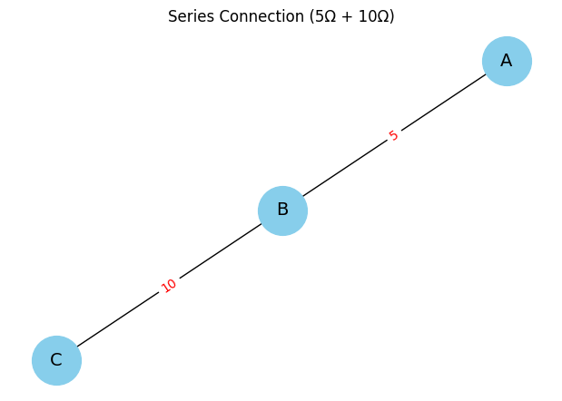
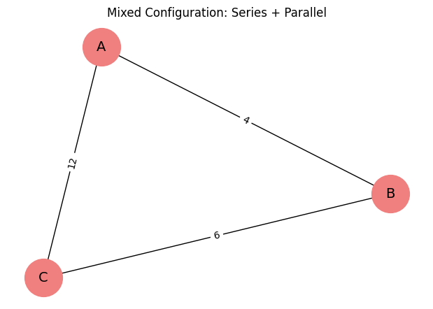
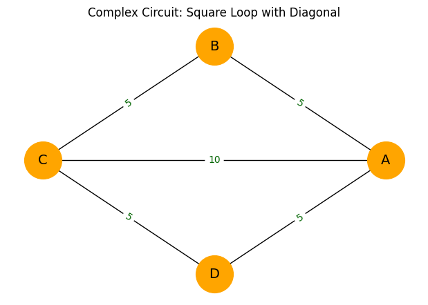
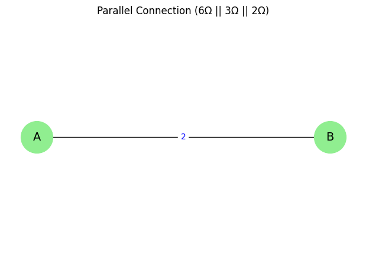

🧮 Problem 1: Equivalent Resistance Using Graph Theory
📘 Motivation
Calculating equivalent resistance is a fundamental problem in electrical circuits, essential for understanding and designing efficient systems. Traditional methods involve iteratively applying series and parallel resistor rules, which can become cumbersome for complex circuits.
Graph theory provides a powerful and algorithmic alternative by representing:
- 🔹 Nodes as circuit junctions
- 🔸 Edges as resistors, with weights equal to their resistance values
This method:
- Streamlines calculations
- Enables automated analysis
- Offers insights into electrical-mathematical relationships
- Has practical applications in simulation software, network design, and optimization
🎯 Task Options
✅ Option 1: Simplified Task – Algorithm Description
Describe an algorithm to calculate equivalent resistance using graph theory.
Requirements:
- 🔍 Identify series and parallel connections
- 🔁 Iteratively reduce the graph to a single equivalent resistance
- 📌 Handle nested combinations correctly

🔧 Pseudocode Outline
function simplify_graph(graph, start_node, end_node):
while graph has more than two nodes:
for each node in graph:
if node has exactly two neighbors:
# Series combination
combine resistors and replace with a single edge
else if node is part of a cycle:
# Parallel combination
find parallel edges and replace with equivalent resistance
return resistance between start_node and end_node
🧠 Option 2: Advanced Task – Full Implementation
Write a full implementation of the algorithm in a language of your choice (e.g., Python).
📌 The implementation should:
- ✅ Accept a circuit graph as input
- ⚙️ Handle nested and arbitrary resistor configurations
- 📤 Output the final equivalent resistance
- 🔬 Be tested on multiple examples:
- Series and parallel resistors
- Nested combinations
- Complex cyclic graphs


💡 Consider using libraries like
networkx(for Python) for efficient graph manipulation.
📦 Deliverables
- 🧾 A detailed pseudocode (or full implementation)
- 🧪 Three tested input examples with analysis
- 📈 Graphical or printed output of equivalent resistance
- 📊 Brief analysis of algorithm efficiency and potential improvements

💡 Hints & Resources
- 🧠 Focus on iterative graph simplification:
- Detect series chains for reduction
- Identify cycles for parallel combinations
- 🔍 Use depth-first search (DFS) or other traversals to find patterns
🛠 Tools:
- Python +
networkxor similar - Adjacency list or matrix for custom representation
- 🧪 Verify small cases manually
🌐 Applications
- 📐 Electrical circuit simplification
- ⚡ Power grid analysis
- 🧩 Simulation software
- 🧠 Algorithm design in computer science